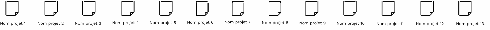

À propos
Pour en savoir plus sur ce site et sa créatrice vous trouverez ici des présentations qui vous permettront d’y voir plus clair.
Pour en savoir plus sur ce site et sa créatrice vous trouverez ici des présentations qui vous permettront d’y voir plus clair.
Je suis Julie Albini, étudiante en première année de MMI. Plus tard, j'aimerais devenir infographiste-webdesigner si possible à mon compte. Ce que j’apprécie dans ces métiers est le mélange entre le côté créatif et le côté numérique.
C’est pourquoi je me suis dirigée vers le BUT MMI qui permet à la fois de préparer à ces métiers, et qui combine bien ces deux aspects. En effet, nous développons notre esprit créatif à travers des créations diverses numériques ou non. Nous avons également des cours qui nous permettent de mettre en lien nos créations avec l’outil informatique comme les cours de production graphique.
Ce site internet sur le féminisme a été conçu pour aider et informer les personnes qui s’intéressent et veulent en savoir plus sur ce thème. J’ai essayé de traiter des sujets peu communs comme les hommes féministes pour ouvrir les consciences sur ces sujets.
Comme nous l’avons vu plusieurs fois à travers les différents articles notamment, le féminisme est un enjeu important aujourd’hui et pour le futur, c’est pourquoi j’ai pris à cœur la création du site et des contenus qui “servent une bonne cause”. J’espère que ce site pourra aider à faire évoluer les consciences et participe à cette lutte qui ne devrait pas encore avoir lieu à l’heure d’aujourd’hui.
Pour avoir d’autres informations sur le féminisme, voici d’autres sites qui pourraient vous être utiles.
